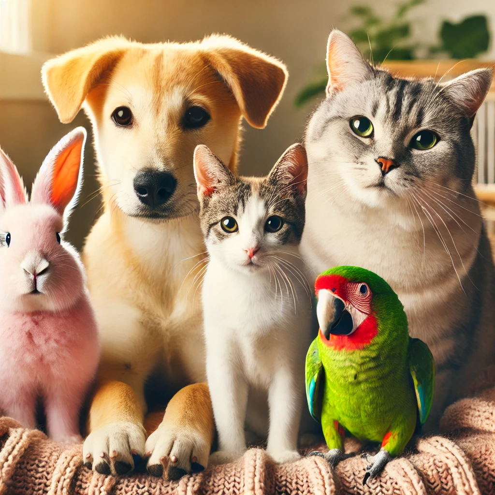
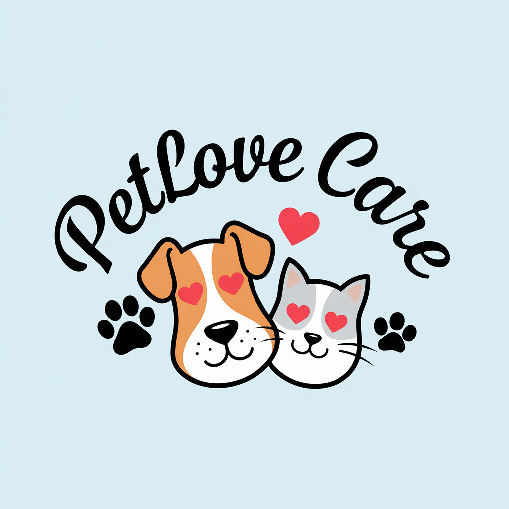
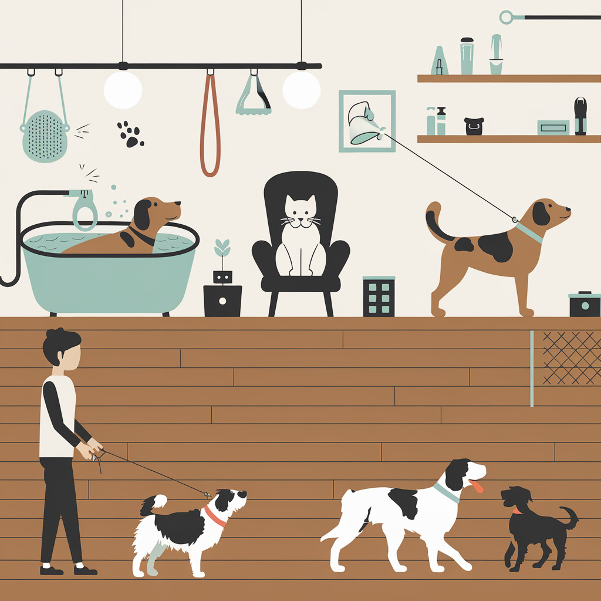
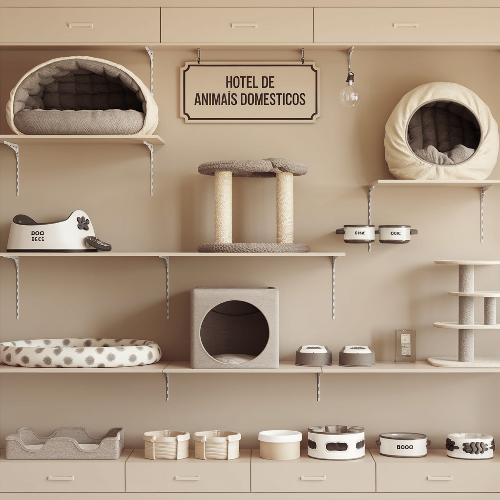

Cuidado e Carinho para Seu Pet, Sempre que Você Precisar!
Serviços de banho, tosa, passeios e cuidados personalizados para cães e gatos, com todo o amor que eles
merecem.
Sobre o nosso trabalho

Quem somos nós?
Somos uma empresa que nasceu da paixão por cuidar e garantir bem-estar dos
nossos companheiros de quatro patas (e até dos de asas e barbatanas!).
Tudo começou com nosso primeiro mascote, que nos inspirou a criar um espaço
dedicado a oferecer os melhores produtos, serviços e suporte para você e seu pet.
Nosso compromisso é com a felicidade e a saúde dos seus bichinhos.. Contamos com uma
equipe de especialistas apaixonados por pets, sempre prontos para ajudar você a encontrar
o que precisa para cuidar de quem faz parte da sua família. Desde brinquedos e acessórios até dicas de cuidados,
estamos aqui para tornar a vida do seu pet ainda mais especial.
Além disso, acreditamos no poder da comunidade. Por isso, queremos criar laços não apenas
com os animais, mas também com seus tutores. Seja você um tutor experiente ou alguém que
acabou de adotar seu primeiro pet, estamos prontos para oferecer suporte e acolhimento.

Nossos trabalhosBanho: Realizamos banhos com produtos especializados para garantir a higiene e a saúde da
pele e pelagem do seu pet. Tudo em um ambiente tranquilo e confortável.
Tosa: Oferecemos tosas higiênicas e estéticas, adaptadas às necessidades específicas de
cada animal, sempre respeitando o bem-estar do pet.
Passeios: Serviços de passeios seguros e monitorados, ideais para manter o seu pet ativo,
saudável e feliz, explorando o ambiente externo com diversão e cuidado.
Hospedagem: Um lar temporário cheio de carinho e atenção. Garantimos um espaço
confortável e seguro para o seu pet enquanto você estiver ausente.
Treinamento Básico: Oferecemos tosas higiênicas e estéticas, adaptadas às necessidades
específicas de cada animal, sempre respeitando o bem-estar do pet.


Como funciona?Agende Online: Escolha o serviço e o horário que melhor se encaixa na sua rotina.
Personalizado: Nossos profissionais vão até sua casa ou atendem em nosso espaço confortável
e seguro.
Receba Atualizações: Acompanhe o cuidado do seu pet em tempo real pelo nosso aplicativo.
Valores dos nossos serviços
Na Pet Lover, oferecemos planos personalizados para atender às necessidades do seu pet,
desde banhos e tosa até hospedagem e passeios. Caso prefira um serviço específico, ajustamos
o valor de forma personalizada. Nosso compromisso é garantir o bem-estar e a felicidade do seu
amigo, com cuidado, amor e qualidade. 🐾
Pet Básico
R$189,90R$151,90/mensal
Banhos: Banhos regulares para manter o pet limpo e saudável, realizado até 1 vez;
Tosas: Corte de pelagem e higiene, realizado até 1 vez;
Passeios: Passeios programados, com até 4 sessões ao longo do plano para manter o pet ativo.
Pet Conforto
R$329,90R$263,90/mensal
Banhos: Realizado até 2 vezes ao longo do plano;
Tosas: Corte de pelagem e higiene, realizado até 2 vezes;
Passeios: Realizamos até 12 vezes ao longo do plano;
Hospedagem: Realizamos 7 dias de hospedagem ao longo do plano.
Pet VIP
R$549,90R$439,90/mensal
Banhos: Produtos de grande qualidade, realizado até 4 vezes;
Tosas: Com os melhores profissionais, realizado até 4 vezes;
Passeios: Realizamos até 20 vezes ao longo do plano;
Hospedagem: Realizamos 30 dias ao longo do plano;
Treinamento: Treinamento básico com foco em humanização.
Depoimentos de Clientes
"Minha cachorrinha adora os passeios e sempre volta feliz. Confio 100% no PetLove Care!" – Beatriz M.
Beatriz M.
"O serviço de hospedagem é incrível! Meus gatos ficaram super tranquilos enquanto viajei." – Rafael T.
Rafael T.